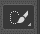
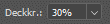

CatLoaf
Intermediate class
Behandelte Themen: Transformieren, Maskieren, Stempel
Ausgangsbild
Einzufügendes Bild
1. Ausschneiden
Kopf markieren mit beliebigen Markierwerkzeug (z.B. Schnellauswahl ) und mit STRG+X ausschneiden und mit
STRG+V einfügen.
2. Transformieren
Das Brot-Bild einfügen und unter die Katzenkopfebene ziehen.
Die Ebene mit der Katze ohne Kopf kann ausgeblendet werden (Augensymbol )
Den Kopf mit STRG+T auswählen und auf die gewünschte Position ziehen. Gegebenenfalls Skalierung und Rotation verändern.
Ebene mit „Rechtsklick“ --> „mit darunterliegenden auf eine Ebene reduzieren“ auf eine Ebene zusammenfügen.
3. Übergang
Der Übergang zwischen dem Kopf und dem Brot sollte flüssiger gemacht werden. Dies machen wir mit dem Stempel.
Wähle einen Pinsel aus, der recht klein ist und keine Härte hat. Die Deckkraft sollte auch reduziert werden. 
Mit ALT+LINKSKLICK einen Bereich auf dem Brot markieren (Anker setzen) und mit LINKSKLICK über den Übergang zeichnen. Deckkraft, Fluss, Härte und Pinselgröße können nach Bedarf verstellt werden.
4. Hintergrund
Um unser Projekt abzurunden fügen wir noch einen Hintergrund ein.
Beliebiges Bild einfach in Photoshop ziehen. Größe mit STRG+T eventuell anpassen.
Es ist wichtig, dass der Hintergrund auf der untersten Ebene ist.